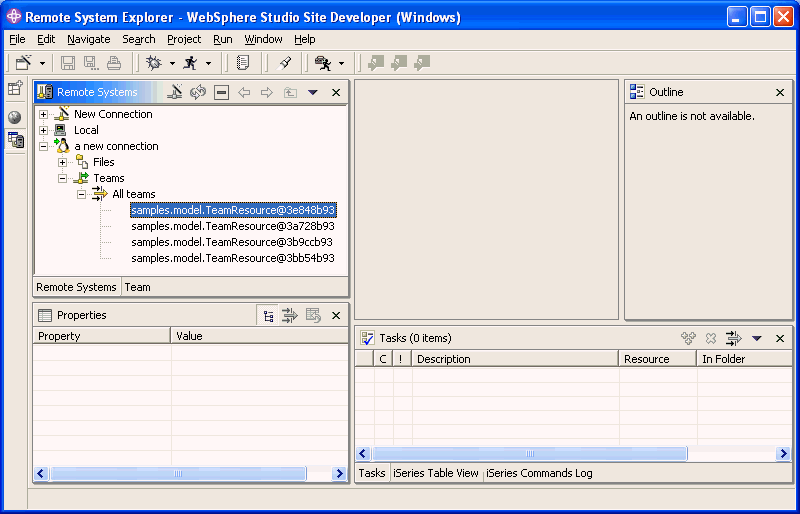
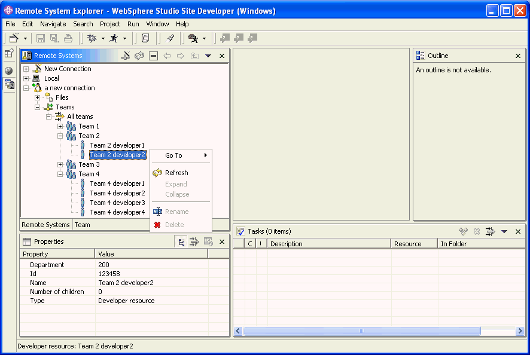
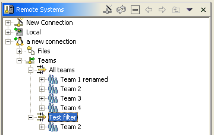
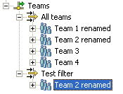
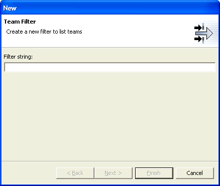
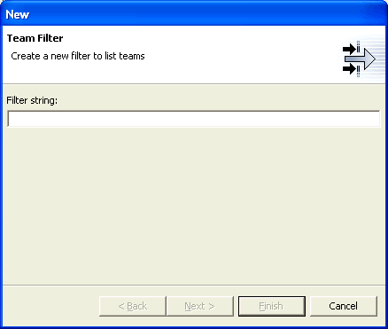
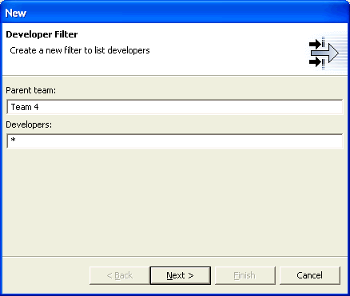
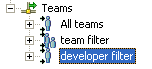
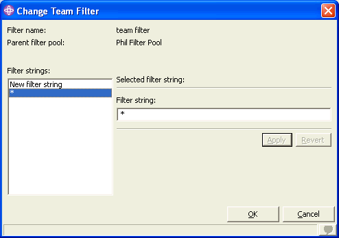
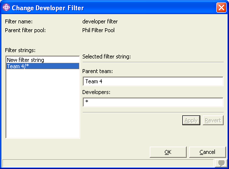

Creating a Subsystem Factory
In this tutorial, you will use the RSE subsystemfactory
extension point to show new subsystems within connections, when they are expanded. Effectively,
you will add a new remote-accessing tool to the Remote System Explorer.
A full-blown tutorial to illustrate this extension point is a bit difficult without inventing
server-side code and a communication layer for that server-side code to communication with the
client-side subsystem. Rather than becoming bogged down in these details, this tutorial will not
write server-side code or a communications-layer, but instead will hard-code the remote resources
on the client-side so as to focus discussion on the client-side code. The extension point assumes
you already have server-side code and a communication layer you now want to exploit within
Eclipse.
Scenario
This tutorial pretends that you have server-side code, which manages user profiles for developers, and
teams of developers. There is a master list of developers identified for development access
to this server, and there is a grouping mechanism that allows developers to be assigned to named
teams. Developers may exist on multiple teams. Each developer can have one or more roles, which
may affect what they are allowed to access.
In this tutorial you will define a subsystem for working with these resources in the remote system
identified by the parent connection object. This will first list teams, then developers within teams.
Roles will be accessible via an action.
Do not worry about how useful or realistic the example is. The point of the exercise is
show the code necessary to fully enable new subsystems. It is up to the subsystem developer to
decide what resources to expose and what actions on those resources.
Step By Step: Creating a Subsystem Factory
If you have not already, first create or prepare a plugin project
We will follow the steps listed in the Overview of Steps section in the description of the plugin.
.
- Create a package named samples.subsystems, by right-clicking on the src folder
and using the New->Package wizard. In the new package, create an empty interface
named IDeveloperSubSystem,
by right-clicking on the package and selecting New->Interface.
- Also in package samples.subsystems, use New->Class to
create a class named DeveloperSystem that extends superclass
AbstractSystem,
selecting the option to include Constructors from superclass. Edit the result to add
a connected instance variable that is used in the methods, as shown in bold here.
- Again in package samples.subsystems, use New->Class to
create a class named DeveloperSystemManager that extends superclass
AbstractSystemManager,
selecting the option to include Constructors from superclass. Edit the result to add
a factory method, and flesh out the methods, as highlighted here.
- Create a package named samples.model. Create two classes in it:
TeamResource and DeveloperResource, each of which extend
AbstractResource.
- Edit DeveloperResource to add name, id, and deptNbr properties,
as shown in bold here.
- Edit TeamResource to add name and developers (array) properties,
as shown in bold here.
- You need to think about filter support. For now, you can keep it simple: users can only create filters that list teams,
by specifying a single string that is either a scalar or a generic team name. If scalar, one team will be shown when the filter is expanded.
If generic, all teams matching the generic pattern will be listed. Given the simplicity, you will not need to create a filter string class to perform
parsing. As a result, you have nothing to do for this step.
- Return to package samples.subsystems, and create class DeveloperSubSystem
that extends DefaultSubSystemImpl.
Edit the generated class to add code highlighted here.
- Again in package samples.subsystems, create class DeveloperSubSystemFactory
that extends DefaultSubSystemFactoryImpl.
Edit the generated class to add code highlighted here.
- In the project's root folder, find and edit file rseSamplesResources.properties and
add the line highlighted here.
- Update your plugin.xml file to include the following lines:
<!-- ======================================= -->
<!-- SubSystem Factory -->
<!-- ======================================= -->
<extension point="com.ibm.etools.systems.core.subsystemfactory">
<factory
id="samples.subsystems.factory"
systemtypes="Linux;Unix;Windows"
name="Teams"
class="samples.subsystems.DeveloperSubSystemFactory"
category="users"
vendor="ACME"
>
</factory>
</extension>
Note: You would normal use the icon and iconLive attributes to specify
a unique icon for your subsystem, but to keep it simple here, just use the default icon.
Now you are far enough along that you can try our what you have, before proceeding. Select
Run->Run As->Run-time workbench. Create a new Linux connection in the RSE, and
expand it. You'll now see your new subsystem, which you can expand
to see its default filter, which in turn you can expand to see your hardcoded list of teams:

You will be prompted for a user ID and password, but since the system class does not really
connect, enter anything you like!
Eventually, you will be able to expand a team to see its developers.
Now it is time to work on the appearance and functions of those remote resources. You will do this
by creating adapters for the resources:
- Select the samples.model package, and:
- Create a new class named TeamResourceAdapter
that extends com.ibm.etools.systems.core.ui.view.AbstractSystemViewAdapter and implements
com.ibm.etools.systems.core.ui.view.ISystemRemoteElementAdapter.
Edit the generated class and add the code highlighted here.
- Create a new class named DeveloperResourceAdapter
that extends com.ibm.etools.systems.core.ui.view.AbstractSystemViewAdapter and implements
com.ibm.etools.systems.core.ui.view.ISystemRemoteElementAdapter.
Edit the generated class and add the code highlighted here.
- Next, you need the icons for your remote resources, which you referred to in your adapters. Edit the RSESamplesPlugin file and edit the initializeImageRegistry
to add the lines of code highlighted here. Now, you need the icons. Select the RSESamplesPlugin project,
right-click and select New->Folder and create a folder named icons. Select the new folder, and use File->Import to
import the team.gif and developer.gif files from the plugins\com.ibm.etools.systems.doc.isv\icons folder,
typically found c:\wdsc\iseries where c:\wdsc is where you installed this product.
- Creating the adapters does nothing until you register them with the platform. To do that, you need
an adapter factory class and you need to register it with the platform:
- Select the samples.model package and in it create a class named
DeveloperAdapterFactory that extends AbstracSystemRemoteAdapterFactory
and implements interface org.eclipse.core.runtime.IAdapterFactory.
Edit the generate class as per the highlighted code here.
- Back in the RSESamplesPlugin class, add the highlighted code
here to your startup method.
Once again, run the workbench to see your new subsystem:

It is looking better now! There are icons and labels, and the team resources are expandable. Try the following things with
your new subsystem resources:
- Right-click on Team 1 and select the rename action. The rename action is enabled because you
overwrote canRename in the team resource adapter class. Try renaming it to a name already in use.
The rename dialog can catch this error because we returned the list of names in use in
the getRemoteParentNamesInUse
method in our team resource adapter class. Rename to a new name. The rename in fact happens because we implemented
the doRename method.
- The default filter All teams exists because we wrote code to create it in
our createDefaultFilterPool
subsystem factory method. Try creating a new filter: right-click on Teams subsystem and select
New->Filter to get the
New Filter wizard. Enter *2, press Next, and
enter Test filter for the filter name. Press Finish
to create the filter. Expand it, and you will see that only teams whose name ends with "2" are shown:

Filter support is free in the RSE,
but you do have to write our own code to apply that filter pattern as you see fit. In this case, we did this in our
internalResolveFilterString subsystem method.
- Notice how a resource like team can display multiple times, by different filters that resolve to it.
Rename Team 2 shown under the new expanded Test filter, and notice how it is successfully
renamed under both filters. This ability to refresh the name in all occurrences of the same resource is made
possible by the adapter methods getAbsoluteName, which helps
RSE find redundant copies of the same object, and refreshRemoteObject,
which the RSE calls, on each redundant copy, on a rename operation.

There are no steps to perform here, but for your reference here is some information on how to further
evolve the functions via your adapter, should you want to:
- To not show the rename and delete actions at all, or to enable them,
override appropriate methods in the adapter class. For details see the methods
showRename,
showDelete,
doRename
and
doDelete in the parent
AbstractSystemViewAdapter class.
- To supply your own validator for syntax checking of new names on the rename dialogs,
override getNameValidator.
- To add additional actions to the pop-up menus, implement the addActions
method in your adapter class.
- To support dragging and dropping, override the
canDrag and
canDrop parent methods in your adapter class.
- To add additional properties to the property sheet, implement the
internalGetPropertyDescriptors and
internalGetPropertyValue methods
in your adapter class.
- To add property pages to your remote objects (the Properties popup menu item will then appear) use
the RSE propertyPages extension point.
Now you will continue with the tutorial by enhancing the running example to supply its own actions for creating and changing
filters. You will support two types of filters in our subsystems: team filters and developer filters. You have seen team filter already,
but developer filters will be new. They will contain a team name and a developer name-pattern, and when expanded, they will list all the
matching developers in the given team. The filter string syntax for developer filters will be "team-name/developer-generic-name". Because
you have more than one type of filter, our filter wizards will set the type attribute for the filters, so the change action will know
which dialog to present to the user. This will also allow you to have different icons for each filter.
- Follow these steps to enable support for our own filter-support:
- First, create the new GUI pane for your developer filter prompts. Select the samples.subsystems
package and in it create a new class named DeveloperFilterStringEditPane that extends the
class SystemFilterStringEditPane in package com.ibm.etools.systems.filters.ui.
Edit the new class, adding the code highlighted here.
- Edit the DeveloperSubSystemFactory class, and add the code highlighted
here.
- Next, you need the unique icons for your own filters, which you referred to in your subsystem factory. Edit the RSESamplesPlugin file and edit the initializeImageRegistry
to add the lines of code highlighted here. Now you need these icons.
Select the folder named icons and use File->Import to
import the teamFilter.gif and developerFilter.gif files from the
plugins\com.ibm.etools.systems.doc.isv\icons folder,
typically found in c:\wdsc\iseries where c:\wdsc is where you installed this product.
- Now you need to edit your subsystem so it will parse the two types of filters you now
have. Edit DeveloperSubSystem and edit it as highlighted here.
- In the project's root folder, find and edit file rseSamplesResources.properties and
add the line highlighted here.
- Now you can run again. Right click on the Teams subsystem, to see the new actions for
creating filters:
 


Create a team filter and a developer filter, and notice the new icons:

Now right-click on a team filter and select Change, and then do the same for a developer filter:


{kind=link}
{kind=link}
{kind=link}
{kind=link}
{kind=link}